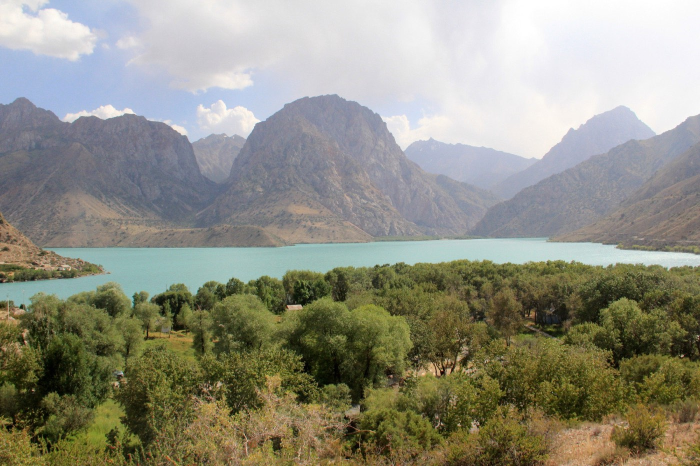

How the visual experience differs
Seven Lakes is about moving through a sequence of different scenes, while Iskanderkul is built around one stronger single-lake landscape.
Travel article
Both Seven Lakes and Iskanderkul are strong nature trips from Samarkand, but they create different kinds of travel days. The right choice depends on whether you want a chain of lake stops or one larger mountain-lake scene.

Below you will find the key details that help plan the trip and understand the route more clearly.
Seven Lakes is about moving through a sequence of different scenes, while Iskanderkul is built around one stronger single-lake landscape.
After comparing the routes, most travelers open the corresponding tour pages.
A short summary for travelers who want the main points at a glance.